Consider the diffusion equation in 1-dimension with fixed boundary conditions.
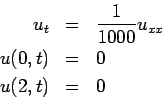
First, we separate variables.
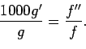
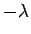
. (The minus sign comes from the fact that I know I want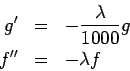
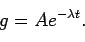
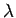
affects whether or not we have oscillatory solutions or exponential solutions. Since the boundary conditions are zero at each side, we see that the only possible solutions are oscillatory ones. To satisfy the boundary conditions at both ends, we see that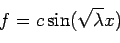
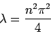
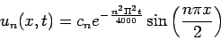
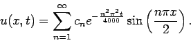
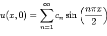
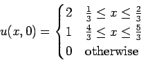
As stated before, the cn's come from the initial conditions.
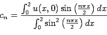
In this case, the Fourier coefficients are
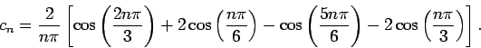
|
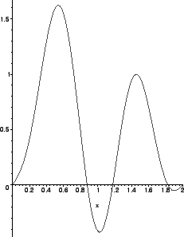 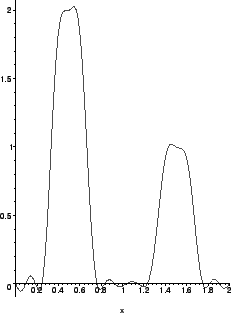 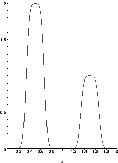 |

This problem is very similar to the second problem. The only
difference is that it will have different Fourier series. In this
case,
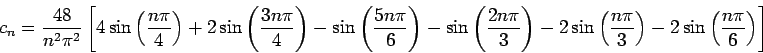
|
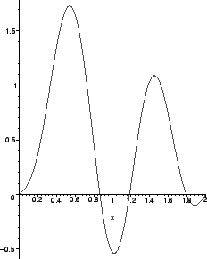 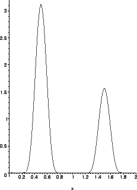 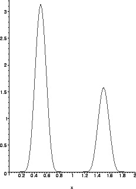 |
From the figures, we can see that the third problem converges to a solution much faster than the second problem. That is, the second problem requires all 50 terms before the oscillations start to fade away. The third problem looks fairly clean after 10 or 20 terms. Some students examined the relative sizes of the coefficients as a function of n which is a fine way to go. Better still, one can examine the coefficients in analytic form and see that the coefficients for the second problem decay like 1/n while the coefficients for the third problem decay like 1/n2. Interestingly, the harmonic series 1+1/2+1/3+... diverges yet the solution to the second problem converges, albeit slowly. Why, do you suppose this happens?